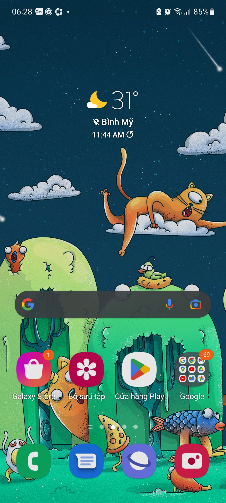
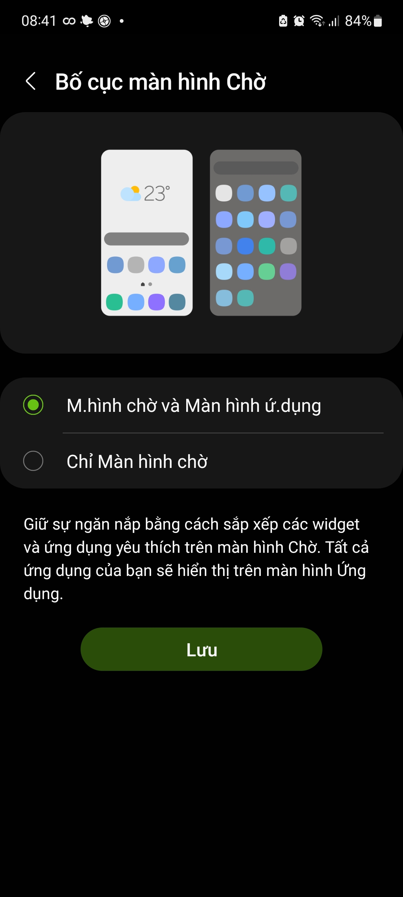
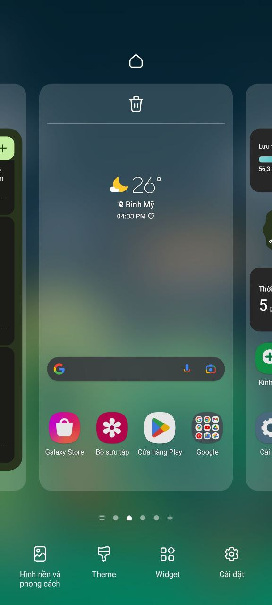

Khám phá giao diện One UI!
Được thiết kế để mang lại ấn tượng bo tròn tinh tế và trọn vẹn, màu sắc sống động, mọi thứ đều gọn, khoảng cách giữa các thành phần được tinh chỉnh cho thể hiện nội dung hợp lí nhất
Hiện đại song song cổ điển
Menu ứng dụng là sự quen thuộc với người dùng Samsung từ trước đến nay, dù là giao diện mới nhất Samsung vẫn làm hài lòng tất cả người dùng bởi có cả chế độ chỉ Màn hình chờ (đa số các điện thoại hiện nay đều dùng) và Màn hình chờ và Màn hình ứng dụng (một điểm rất riêng nhưng không thừa ở điện thoại Samsung). Với sự lựa chọn thứ hai, sự ngăn nắp và gọn được thể hiện một cách rõ ràng, không bị rối khi toàn bộ ứng dụng không cần thiết hiện ở Màn hình chờ

Làm mờ tuyệt đẹp

Chủ thể luôn được làm nổi bật rõ ràng lên trên nền bên dưới được làm mờ một cách thích mắt, mọi thứ tùy chỉnh đều được sắp xếp gọn bên cạnh dưới để dễ thao tác nhất chỉ với một tay. Ở giữa là trung tâm hiển thị nội dung được làm lớn để dễ nhìn và thu hút sự cảm nhận. Phí trên là biểu tượng icon trực quan và đơn giản. Tổng hợp lại ta được một giao diện với bố cục rõ ràng, thân thiện và dễ sử dụng đối với người dùng, tạo cảm giác thoải mái, thích thú và hấp dẫn
Tính năng 1
Menu ứng dụng là sự quen thuộc với người dùng Samsung từ trước đến nay, dù là giao diện mới nhất Samsung vẫn làm hài lòng tất cả người dùng bởi có cả chế độ chỉ Màn hình chờ (đa số các điện thoại hiện nay đều dùng) và Màn hình chờ và Màn hình ứng dụng (một điểm rất riêng nhưng không thừa ở điện thoại Samsung). Với sự lựa chọn thứ hai, sự ngăn nắp và gọn được thể hiện một cách rõ ràng, không bị rối khi toàn bộ ứng dụng không cần thiết hiện ở Màn hình chờ
Tính năng 1
Menu ứng dụng là sự quen thuộc với người dùng Samsung từ trước đến nay, dù là giao diện mới nhất Samsung vẫn làm hài lòng tất cả người dùng bởi có cả chế độ chỉ Màn hình chờ (đa số các điện thoại hiện nay đều dùng) và Màn hình chờ và Màn hình ứng dụng (một điểm rất riêng nhưng không thừa ở điện thoại Samsung). Với sự lựa chọn thứ hai, sự ngăn nắp và gọn được thể hiện một cách rõ ràng, không bị rối khi toàn bộ ứng dụng không cần thiết hiện ở Màn hình chờ